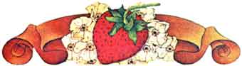

For strawberry plants to thrive and survive, they should be planted at the proper depth. Dig a hole to accept the full depth of the roots and then plant so the crown will be even with the ground surface.